Q Learning is an off-policy RL method — the policy that generates the data does not need to be the same policy that you are improving using it. In discrete tabular setting, this can be solved via simple dynamic programming. 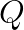 should tell you the discounted sum of rewards, and thus can be framed recursively as a local update.
Given state 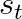, action 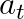, reward 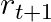 for taking at , discount factor
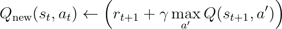
Thus, written a least squares loss function 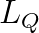
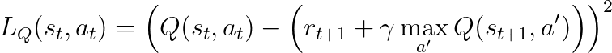
In discrete space, 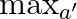 is computable as we can enumerate all possible actions. In continuious action space, this is not possible. Thus, we must replace this exhaustive max with a learned “actor” that takes actions, with the Q function taking the role of “critic”.
In DDPG, the actor learns a simple determinstic mapping from state to action , with noise added for exploration during data collection, i.e.
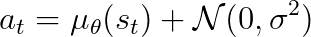
during training and
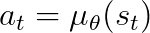
during inference. Thus, for a given batch of data, the critic can be optimized via a modified loss, i.e.
 = \left(Q(s_t, a_t) - \left(r_{t+1} + \gamma Q(s_{t+1}, \mu_\theta(s_{t+1})) \right) \right)^2")
and then the actor optimized to maximize the value; this can be done by simply minimizing the negative of the function, i.e.
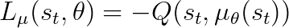